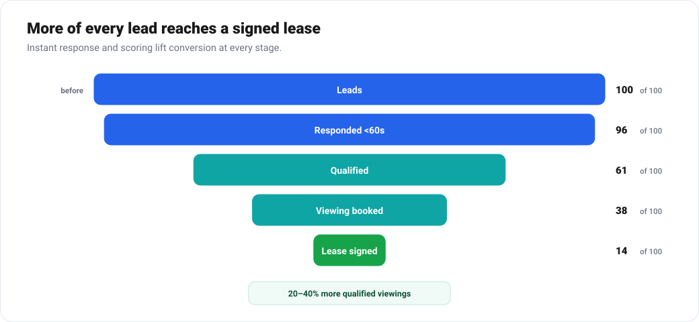
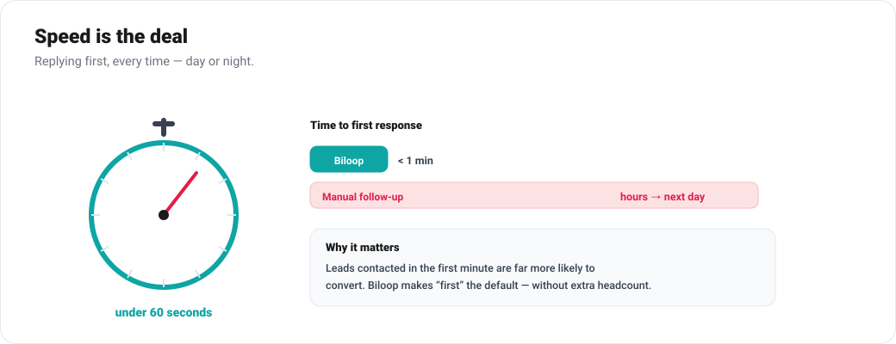
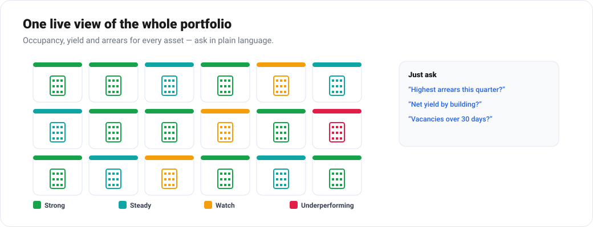

From Listings to Lifetime Value: How AI Transforms Real Estate
Speed wins deals and data wins portfolios. Here's how AI quietly fixes both ends of the property business.
Real estate is two businesses wearing one suit. The front office is a high-velocity sales engine where speed of response decides who wins the deal. The back office is a long-horizon asset-management operation where maintenance, leases, compliance and cash flow play out over years. Both are drowning in documents, and both are usually run on a patchwork of spreadsheets, a CRM nobody fully trusts, and email.
Biloop connects the two halves — turning scattered enquiries, contracts, payments and maintenance tickets into one intelligent system that helps you close faster and operate smarter.

The leaks in the funnel and the portfolio
1. Slow, inconsistent lead follow-up
Most property leads go cold not because the price is wrong, but because nobody replied fast enough. Leads arrive from portals, the website, WhatsApp and walk-ins, and they sit in inboxes until an agent gets to them — by which time the prospect has booked a viewing elsewhere.
2. Reactive maintenance
Facilities are fixed when they break. Emergency repairs cost more, frustrate tenants, and shorten asset life. Maintenance history lives in a dozen WhatsApp threads.
3. Lease and document chaos
Renewal dates, rent escalations, expiring permits and break clauses hide inside PDFs. Miss one and you lose revenue or fall out of compliance.
4. No single portfolio view
Occupancy, arrears, yield and maintenance cost per asset are spread across systems, so owners can't see which properties are actually performing.
How Biloop transforms real estate operations


Lead-to-lease automation
Biloop captures every enquiry from every channel into one pipeline and responds instantly — answering common questions, qualifying budget and intent, and offering viewing slots from the agent's live calendar. Agents wake up to booked viewings, not a backlog of cold leads. Biloop scores and prioritises prospects so the team spends time on the deals most likely to close.
Document and contract intelligence
Drop in a lease, title deed, KYC document or supplier contract and Biloop extracts the key terms — parties, dates, amounts, escalation clauses, renewal and break dates — and loads them into a structured, searchable record. It then watches the calendar for you, flagging renewals, rent reviews and expiring permits well before they bite.
Predictive and streamlined maintenance
Tenants report issues through a simple channel; Biloop triages, dispatches the right vendor, tracks the SLA, and keeps a complete history per unit. Using that history (and IoT signals where available), it shifts you from reactive repairs toward planned, predictive maintenance — protecting asset value and tenant satisfaction.
Portfolio intelligence
Biloop unifies occupancy, rent roll, arrears, maintenance cost and yield into one live view. Ask "Which assets have the highest arrears?" or "What's my net yield by building this year?" and get an instant, drill-down answer. Investment decisions stop being anecdotal.
Automated rent and collections
Biloop sends rent reminders, tracks payments, escalates arrears with a defined workflow, and reconciles receipts automatically — cutting late payments and the admin around them.
Before and after
| Area | Before Biloop | With Biloop |
|---|---|---|
| Lead response | Hours to days, inconsistent | Under a minute, 24/7 |
| Maintenance | Reactive, untracked | Triaged, SLA-tracked, predictive |
| Leases | Buried in PDFs | Structured, deadline-aware |
| Collections | Manual chasing | Automated reminders & reconciliation |
| Portfolio view | Spreadsheets, lagging | Live, conversational analytics |
Works for agencies, developers and asset managers
Whether you're a brokerage chasing conversion, a developer managing handover and snagging, or an asset manager running a mixed portfolio, Biloop adapts to the workflow. It integrates with your existing CRM, accounting and property-management tools rather than replacing them.